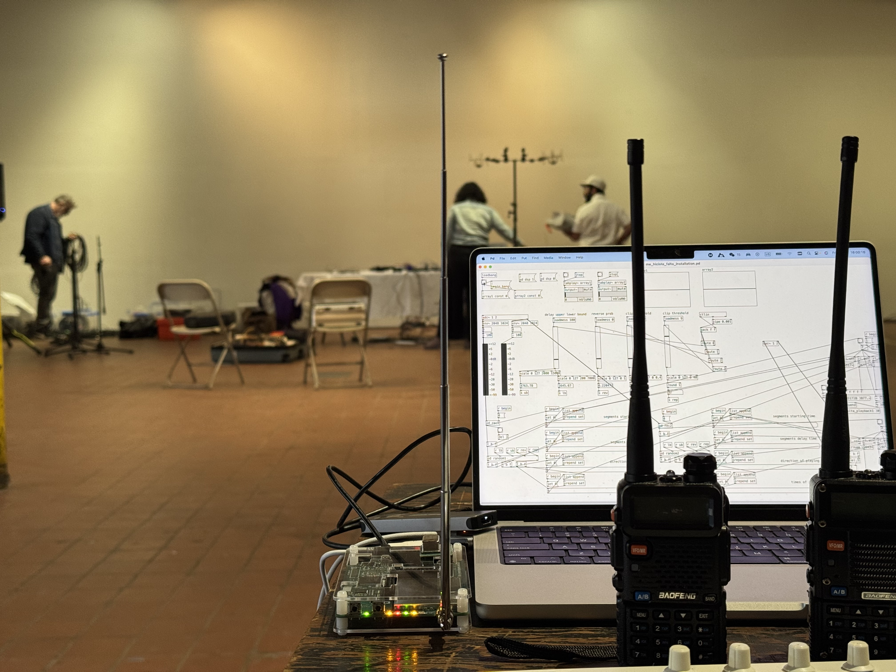
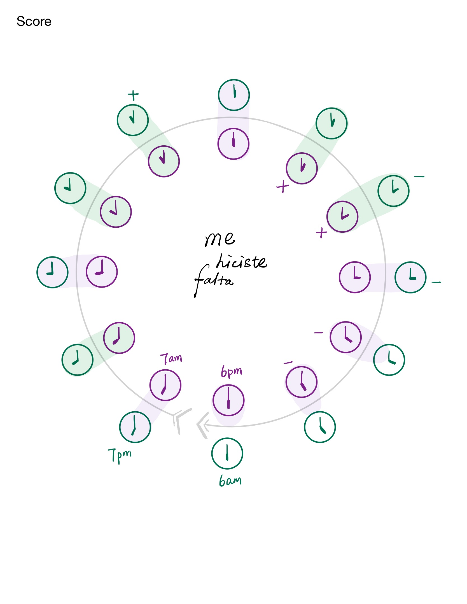

Selected performances
Me Hiciste Falta (2024)
Event-score composition for live-electronics, ham radios and Software Defined Radio (HackRF One) based installation, two performers and objects.
Interpreted and recorded by Duo Lingua.






These particles we immersed (2025)
Multimedia live set with DIY sensor instrument, live electronics, real-time visual processing, and performance with yarn. A 50-minute production by āññā duo.
3-min excerpt:
Full performance:
Peeling Cycle (2026)
Multimedia intallation performance. A 25-minute production by A Happy Mennn Trio.
Full performance:
Press 'Enter' to return to the homepage for more works.